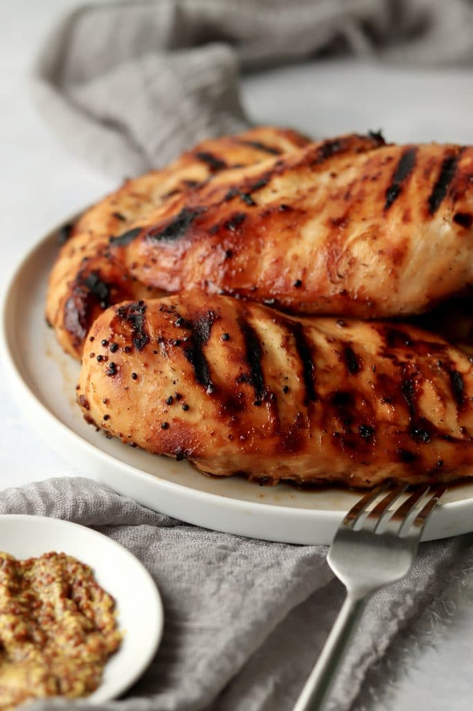

Honey Mustard Grilled Chicken Recipe

Description
Fast and delicious chicken for the whole family
Easy to make and budget friendly
Ingredients
- 1/3 cup Dijon mustard
- 1/4 cup honey
- 2 tablespoon mayonnaise
- 1 teaspon stea sauce
- 4 sinless, boneless chicken halves
Directions
- Preheat the grill for medium heat.
- In a shallow bowl, mix the mustard, honey, mayonnaise, and stea sauce. Set aside a
small amount of the honey mustard sauce for basting. and dip the chicken into the
reamaining sauce to cout.
- Lightly oil the grill grate. Grill chicken over indirect heat for 18 to 20 minutes, turning
occasionally, or until juices run clear. Baste occasionally with the reserved sauce
during the last 10 minutes. Watch carefully to prevent burning!